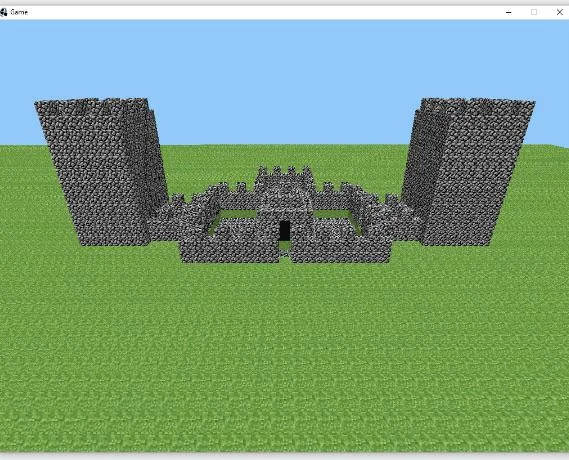

01
2009: los primeros bloques
Minecraft comenzó en 2009 con el trabajo de Markus Persson, conocido como Notch. Una de sus primeras versiones se llamó Cave Game. La idea de colocar y quitar bloques parecía sencilla, pero ofrecía una libertad enorme: en lugar de seguir un único camino, los jugadores podían transformar el mundo a su alrededor.